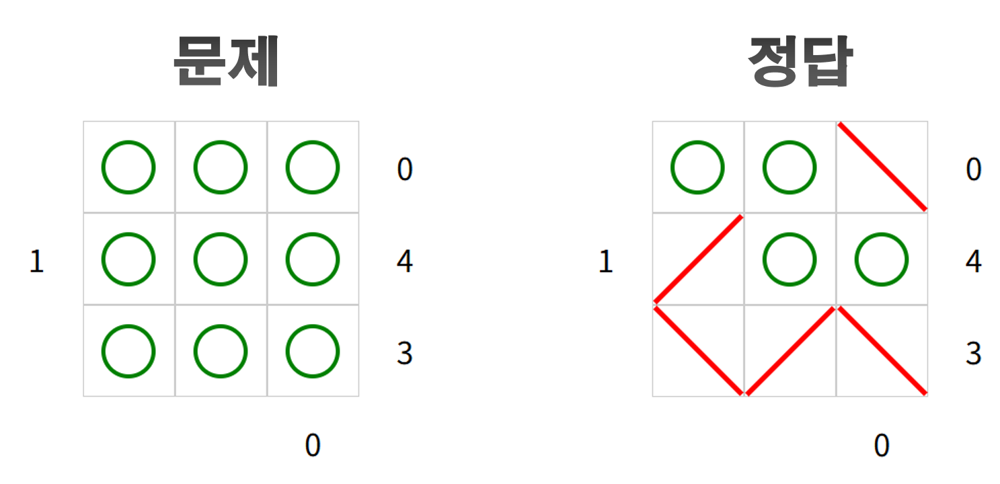
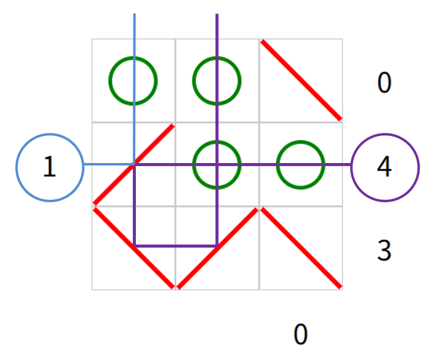

- 녹색 원을 클릭하면 빨간색 거울(대각선)이 순서대로 나타납니다. 더 클릭하면 다시 녹색 원이 됩니다.
- 외곽의 숫자는 해당 위치에서 수평 또는 수직으로 레이저를 쏘아 바라볼 때 시야에 걸리는 녹색 원의 총 개수를 나타냅니다. (빨간색 거울에 반사되어 꺾이는 경로에 있는 것도 모두 포함됩니다.)
- 숫자 1과 숫자 4에 대한 것은 아래 그림을 참고하세요. 경로를 따라가다 보면 동일한 녹색 원을 두 번 이상 지나치며 중복으로 셀 수도 있습니다.

설명 닫기